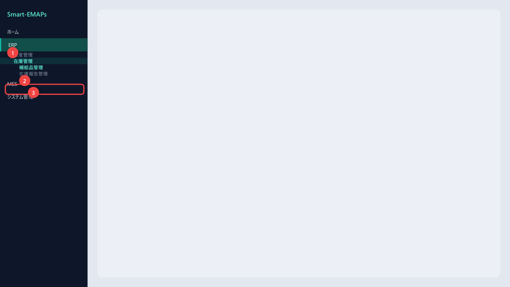
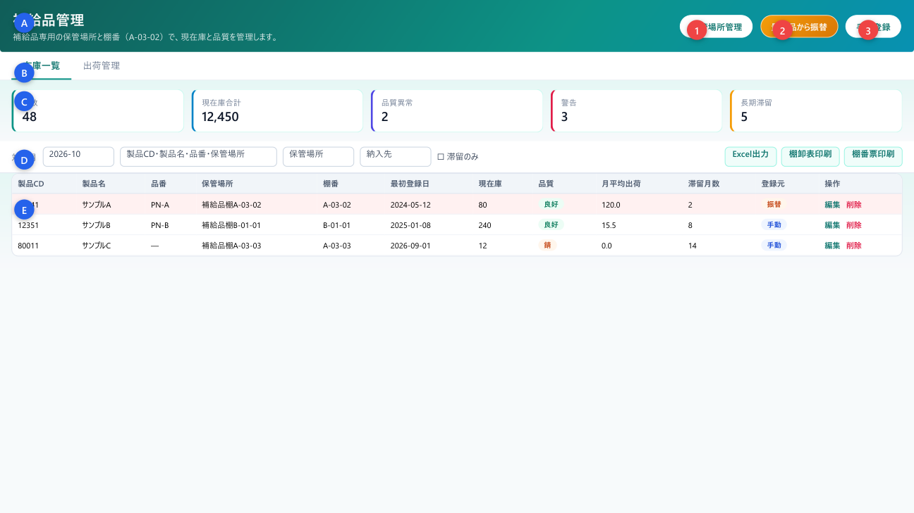
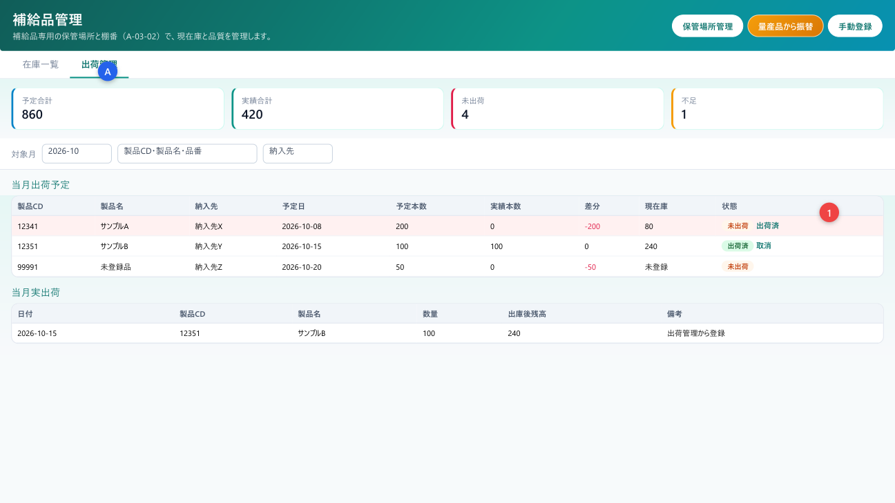
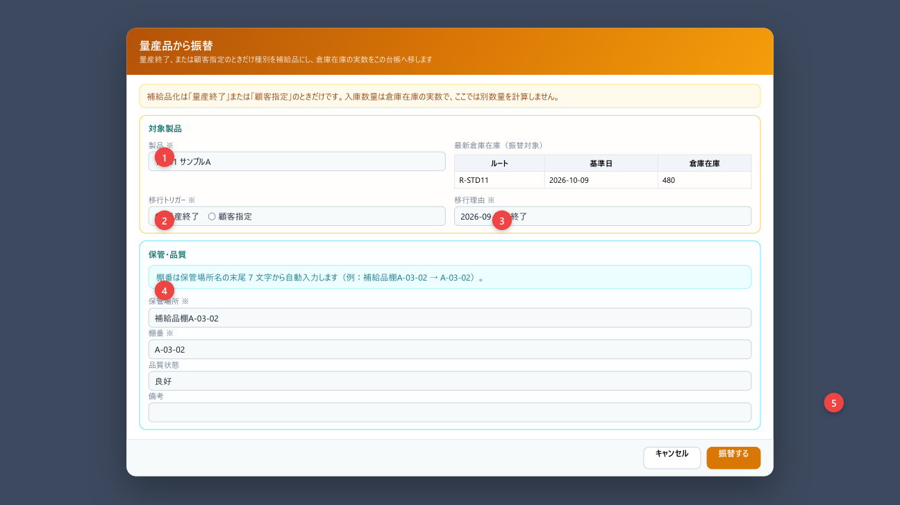
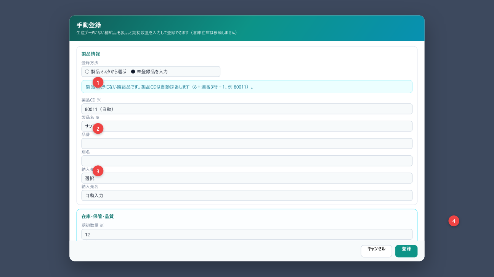
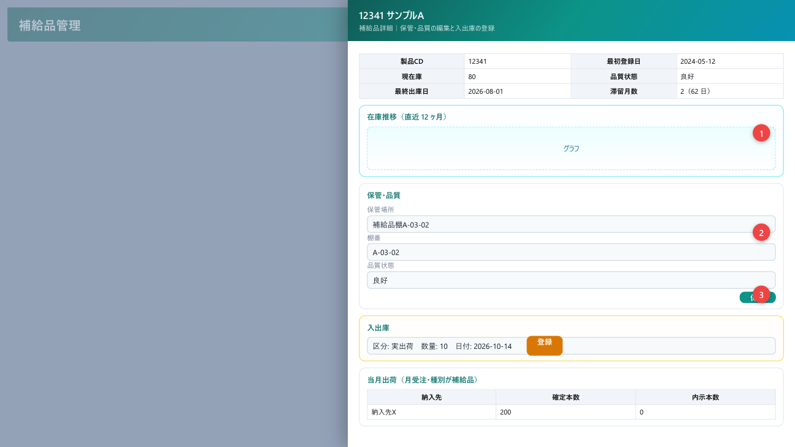
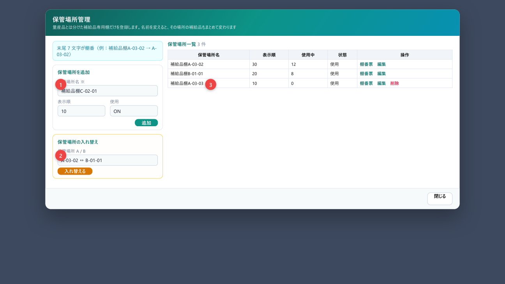
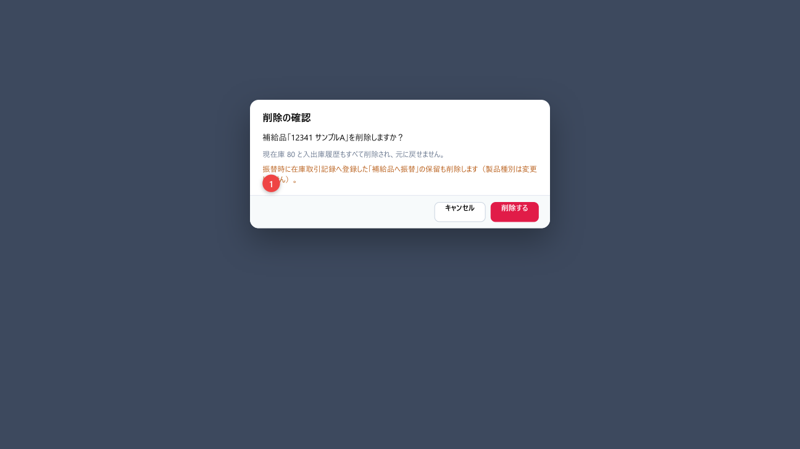

補給品台帳の現在庫・品質・出荷を、専用棚番で登録・確認する
「補給品管理」は、量産が終わった品や顧客指定の補給用在庫を、製品ごとの台帳で管理する画面です。専用の保管場所・棚番（例 A-03-02）と品質状態を持ち、入出庫と出荷予定を追います。
| できること | 説明 |
|---|---|
| 在庫一覧 | 現在庫・品質・滞留・警告を一覧で確認 |
| 出荷管理 | 当月の出荷予定（日受注）と実出荷、出荷済の登録 |
| 量産品から振替 | 製品種別を補給品にし、最新倉庫在庫を台帳へ移す |
| 手動登録 | 倉庫を動かさず台帳だけ作る（マスタ選択／未登録品の自動採番） |
| 詳細・入出庫 | 保管・品質の編集、生産入庫／実出荷／調整、履歴 |
| 保管場所 | 追加・編集・入れ替え・棚番票印刷 |
1 製品 CD につき 1 台帳です。振替は倉庫在庫の実数を入庫し、同数を在庫取引記録の「保留」に登録します。手動登録は倉庫を動かしません。現物を動かしたら、その場で入出庫（または出荷管理の出荷済）を登録してください。
| 用語 | 意味 |
|---|---|
| 棚番 | 保管場所名の末尾 7 文字（例：補給品棚A-03-02 → A-03-02）。自動入力で手入力不可 |
| 警告 | 当月の出荷予定に対して現在庫が足りない行（一覧の赤系統） |
| 長期滞留 | 最終出庫（未出庫は登録日）から規定日数（既定 365 日）以上残っている |
| 月平均出荷 | 対象月を含む直近 N ヶ月（既定 6）の受注確定本数の月平均 |
| 移行トリガー | 振替時の「量産終了」または「顧客指定」 |
| 実出荷 | 台帳から出庫する区分。出荷管理の「出荷済」でも登録される |

/erp/inventory/supply-parts です。

| No | エリア | 説明 |
|---|---|---|
| A | ヘッダー | タイトルと 3 ボタン（保管場所管理／量産品から振替／手動登録） |
| B | タブ | 在庫一覧 と 出荷管理 |
| C | 集計カード | タブごとに内容が変わる（第 4・5 章） |
| D | 条件バー | 対象月・キーワード・納入先など。在庫一覧のみ保管場所・滞留のみ・出力ボタン |
| E | 一覧 | 台帳、または出荷予定／実出荷 |
| ボタン | 動き | 参照 |
|---|---|---|
| 保管場所管理 | 保管場所ダイアログを開く | 第 9 章 |
| 量産品から振替 | 振替ダイアログ（新規権限が必要） | 第 6 章 |
| 手動登録 | 手動登録ダイアログ（新規権限が必要） | 第 7 章 |
| Excel出力 | 在庫一覧を Excel 出力 | 第 11 章 |
| 棚卸表印刷 | 保管場所ごとの実棚確認用表 | 第 11 章 |
| 棚番票印刷 | 棚番を大きく A4 縦印刷 | 第 11 章 |
| カード | 内容 |
|---|---|
| 件数 | 条件に合う台帳の件数 |
| 現在庫合計 | 現在庫の合計本数 |
| 品質異常 | 品質が「良好」以外の件数 |
| 警告 | 出荷予定に対し在庫不足の件数 |
| 長期滞留 | 規定日数以上動いていない件数 |
対象月は月平均出荷や出荷連携の基準月です。キーワードは製品 CD・製品名・品番・保管場所。保管場所・納入先で絞り込み、滞留のみで長期滞留だけ表示します。変更すると一覧が自動で再読込されます。
| 列 | 内容 |
|---|---|
| 棚番 | 色分けチップ。未設定は「未設定」 |
| 最初登録日 | 台帳に載せた日。古いほど色が濃くなる |
| 滞留月数 | 最終出庫（未出庫は登録日）からの月数。12 以上は強調 |
| 登録元 | 振替／手動 |
| 移行 | 量産終了／顧客指定（振替時） |
| 操作 | 編集（または詳細）／削除 |
タブ 出荷管理 では、対象月の出荷予定と実出荷を見ます。予定は日受注管理の確定本数（種別が補給品）から来ます。
| カード | 内容 |
|---|---|
| 予定合計 | 当月予定本数の合計 |
| 実績合計 | 当月実出荷の合計 |
| 未出荷 | まだ出荷済にしていない予定の件数 |
| 不足 | 予定に対して現在庫が足りない件数 |
| 列・操作 | 説明 |
|---|---|
| 予定日 | 日受注の確定がある最早日。複数日あると「他 N 日」 |
| 差分 | 実績 − 予定。マイナスは不足 |
| 現在庫 | 台帳があれば本数。未登録は「未登録」 |
| 状態 | 未出荷／一部出荷／出荷済 |
| 出荷済 | 編集権限があるとき。台帳へ実出荷を登録し状態を出荷済にする |
| 取消 | 出荷済を戻し、登録した実出荷も取り消す |
対象月に登録された実出荷の履歴です。日付・数量・出庫後残高・備考を確認できます。

| 対象 | 内容 |
|---|---|
| 製品マスタ | 製品種別を「補給品」に変更 |
| 台帳 | 新規作成（登録元＝振替）。品番・別名・納入先はマスタから継承可 |
| 入庫数量 | 基準日以前の最新生産データの倉庫在庫を全ルート合計（負なら 0） |
| 入出庫履歴 | 「振替入庫」を当日で登録 |
| 在庫取引記録 | 同数の保留（補給品へ振替）を登録し、倉庫側から差し引く |


在庫一覧の行クリック、または「編集／詳細」。出荷管理でも stock_id がある行をクリックすると同じドロワーが開きます。
製品名・品番・別名・納入先・保管場所・最初登録日・品質・備考を編集し 保存 します（編集権限が必要）。製品 CD と棚番（保管場所連動）は手では変えません。
| 区分 | 現在庫 | 使いどころ |
|---|---|---|
| 生産入庫 | ＋ | 補給品を生産して棚に入れたとき（1 以上） |
| 実出荷 | − | 出荷したとき（1 以上）。最終出庫日・滞留の基準になる |
| 調整 | 増減 | 棚卸差異など。減らすときはマイナス |
日付・数量・備考を入れて 登録 します。現物を動かしたその場で登録してください。

保管場所名（必須）・表示順・使用・備考を入力し追加／更新します。名前の末尾 7 文字が棚番になります。名前を変えると、その場所の補給品の保管場所名と棚番もまとめて更新されます。
保管場所 A と B を選び 入れ替える と、双方の補給品が入れ替わり、棚番も相手側に合わせます。確認ダイアログが出ます。
| 操作 | 内容 |
|---|---|
| 棚番票 | その保管場所の補給品だけ棚番票を印刷 |
| 編集 | 左側のフォームに読み込む |
| 削除 | 使用中件数 0 のときだけ可。使用中は「使用を停止」してから |

現在庫と入出庫履歴はすべて消え、元に戻せません。振替登録の場合、在庫取引記録の「補給品へ振替」保留も削除します（製品種別は補給品のままです）。
| 操作 | 内容 |
|---|---|
| Excel出力 | いまの在庫一覧条件の内容を Excel で保存 |
| 棚卸表印刷 | 保管場所ごとに年 1 回の実棚確認用。差異はその場で詳細の「調整」へ |
| 棚番票印刷 | 一覧を棚番ごとに A4 縦。約 5m 先から読める大きさ。印刷倍率は 100% |
在庫管理モジュールの操作権限（新規・編集・削除）を使います。
| 権限 | できること |
|---|---|
| 閲覧のみ | 一覧・出荷・詳細の参照。振替・手動・入出庫・出荷済は出ない／無効 |
| 新規 | 振替・手動登録・保管場所の追加 |
| 編集 | 詳細の保存・入出庫・出荷済／取消・保管場所の編集・入れ替え |
| 削除 | 台帳削除・保管場所削除（使用中 0） |
| メッセージ | 意味と対処 |
|---|---|
| 振替しました。補給品へ入庫 N、…保留を登録しました | 振替成功 |
| 登録しました（製品CD …） | 手動登録成功（自動採番時は CD を表示） |
| 入出庫を登録しました／保存しました | 詳細での登録・保存成功 |
| 出荷済にし、実出荷 N を登録しました | 出荷管理での出荷済成功 |
| 出荷済を取り消し、実出荷を取り消しました | 取消成功 |
| 補給品台帳に未登録のため出荷済にできません | 先に振替または手動登録 |
| 移行トリガーを選択してください／移行理由を入力 | 振替の必須入力 |
| 製品CD、製品名、保管場所は必須です | 手動登録の必須 |
| この製品の種別は「…」です。…このまま登録しますか？ | 種別が補給品以外の手動登録確認 |
| 削除しました（在庫取引記録の振替保留 N 件も削除） | 振替由来の削除 |
| 使用中のため削除できません | 保管場所に台帳が残っている |
| ポップアップがブロックされました | 印刷・棚番票。ブラウザで許可 |
| Excel 出力に失敗しました | 通信またはダウンロード制限を確認 |
| 質問 | 答え |
|---|---|
| 振替ボタンが無い | 新規権限がありません。管理者に依頼してください |
| 同じ製品をまた振替したい | 台帳があるため不可。詳細で入出庫するか、削除後に再振替（運用に注意） |
| 警告が消えない | 現在庫を増やす（入庫）か、予定側を見直す |
| 棚番票が小さい | 印刷倍率を 100% にする |
| 滞留のみに出る条件は | 最終出庫（未出庫は登録日）から規定日数以上（既定 365 日） |
| 項目 | 内容 |
|---|---|
| 文書名 | 補給品管理 操作説明書 |
| 対象 | ERP → 在庫管理 → 補給品管理 |
| 画面パス | /erp/inventory/supply-parts |
| 版数 | 第 2.0 版 |
| 作成日 | 2026年10月14日 |
| スタイル正本 | 月受注管理 操作説明書（order-monthly.pdf）に準拠 |
| 言語 | 日本語 |
| 日付 | 版 | 内容 |
|---|---|---|
| 2026-10-09 | 1.0 | 初版（在庫一覧・振替・手動・詳細・保管場所・Excel・棚卸表） |
| 2026-10-14 | 2.0 | 出荷管理タブ、棚番票、保管場所入れ替え、実出荷区分、現行 UI に合わせて全面改訂 |
以上。ボタン名は 2026年10月14日時点の画面表示と一致します。